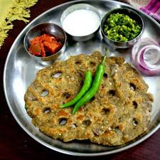

🥣 Thalipeeth

Ingredients
- 1 cup multigrain flour (or bhajani)
- 1 small onion, finely chopped
- 1–2 green chilies, finely chopped
- 2 tbsp fresh coriander, chopped
- 1/2 tsp cumin seeds
- 1/4 tsp turmeric powder
- Salt to taste
- Water, as needed
- Oil or ghee for roasting
Instructions
- In a mixing bowl, combine all ingredients except oil. Add water gradually to form a soft dough.
- Divide dough into small balls. Flatten each on a plastic sheet or banana leaf using wet hands.
- Make a hole in the center of each thalipeeth to help it cook evenly.
- Heat a tawa, drizzle oil, and place the thalipeeth on it. Cook on medium flame until golden and crisp on both sides.
- Repeat with remaining dough. Serve hot.
Serve With
- Fresh curd or yogurt
- Thecha (green chili-garlic chutney)
- White butter or pickle
💡 Tip: Wet your fingers before spreading the dough to prevent sticking. Traditional "bhajani" flour gives an authentic taste.